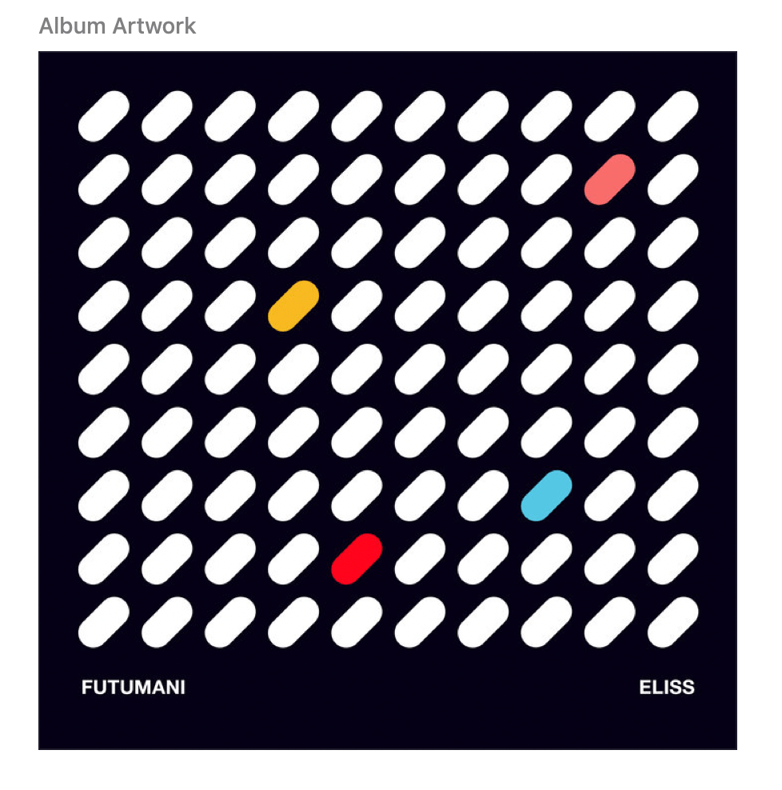

I love when code breaks free from the screen such as in Physical Computing when code becomes integrated in interactive objects. In this project, animated generative and procedural code becomes part of an interior space. It’s an illusion as light is merely distributed from a projector but the effect is still slightly magical. Created in C++ with openFrameworks and ofxPiMapper, my projection mapping project explores the form of a pyramid made of cubes. The project is comprised of 6 scenes, each lasting 30 seconds. A fade to and from black provides the transition between scenes.
This video is made by combining HD iPhone footage with video footage from a Lumix GX1 with a 20mm prime lens. I took several passes at recording - one with automatic focus so the video would go in and out of focus for a more artistic effect. The music is by Dan Deacon - my own face is F word from his album Meetle Mice.
Concept & Research
The hierarchy of the stacked cube in a pyramid shape offered a nice opportunity to explore staggering visuals and creating interesting animations at the intersections of the individual cubes. I drew inspiration from other projection mapping projects, especially those done on cubes:
This project offered an opportunity to play, learn, and grow - to design something on paper and then figure about how to code my own ideas. Any project involving writing code will take as much time as you give it and there is never enough time. Because of this I tried to keep my designs manageable and tried to code defensively. For example, I left the speed of each animation accessible and easily changeable with one variable. The transitions can be found quickly and modified to fit each scene.
Coming up with a color palette early in the process was helpful as it gave the project a sense of visual cohesion and a relationship between the scenes. openFrameworks has a ton of predefined colors which you can call by name in the code, but I wanted very specific colors so I defined my own. This was especially useful when I created a color vector for Scene 2 - Diagonal Rain.
I kept my code lean, my scenes organized, everything complied and ran as designed, and I pushed myself considerably. I don't think I could have worked harder on this project actually, which is a lesson in itself.

References
Scene 2, Diagonal Rain was inspired by the album cover for Eliss by Futumani. I discovered this album after reading about the game Eliss in Processing by Casey Reas and Ben Fry. I was interested to play any game made in Processing and I found that I loved the soundtrack and audio cues.
Scene 6 was designed and coded in Processing by Saskia Freeke. I love her work and was pleased that one of our assignments was to take one of her Processing projects and change the JAVA into C++.
In many ways I find coding in Processing easier and actually used it as a first step on the Diagonal Rain scene (scene 2). Many coders suggest manipulating other people’s code to make it your own but I found when I changed the circles to other shapes, that the intersections of the cube corners were less engaging. I changed the timing of Saskia's animation and colors slightly but I couldn’t bring myself to change her work too much. As I have five original scenes, I figured it was ok to include one Saskia scene.